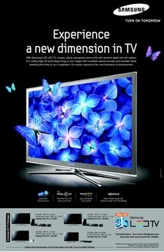
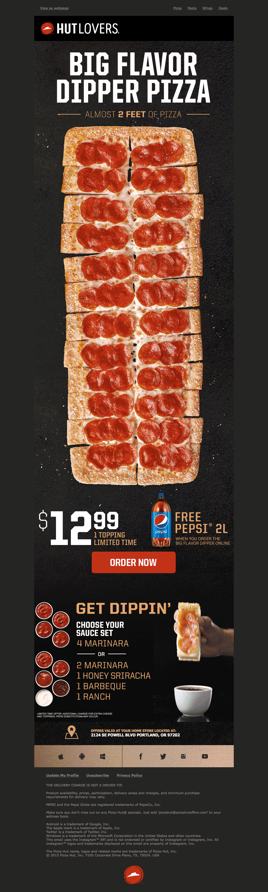

"Order Online" amazon.com
"Life at Samsung"
"For the love of Pizza"
When you feel like giving up just remember that there are a lot of people you still have to prove wrong. "The world is full of nice people. If you can't find one,be one".- Nishan Panwar. "Believe in yourself, take on your challenge, dig deep within yourself to conquer fears."
Singer Justin Bieber is set to release his new album, titled Changes, on February 14, the musician announced on Tuesday.watch more The pop singer, who is returning to the music scene after five years, took to Instagram to share the news. "My new album #Changes out Feb 14. Pre-order and get the new track with my friend @kehlani 'Get Me' now," Bieber wrote.

November 3: A source confirms to Us Weekly the pair are indeed a couple, saying “Selena always had feelings for Justin. Her friends want her to becautious because she has been in such a good place post-surgery.” TMZ also confirmed the romance was back, saying the pair are “clearly dating”.
TAYLOR SWIFT new Official  Music Video.
Official music video by Taylor Swift performing “cardigan” – off her album ‘folklore.’
Music Video.
Official music video by Taylor Swift performing “cardigan” – off her album ‘folklore.’
Arthur Gunn(Dibesh Pokhrel)Nepalese-American singer-songwriter from Wichita, Kansas who came to national attention in 2020 as the runner-up finalist on the eighteenth season of the singing reality show American Idol
Cigar smoking, manspreading and relieving herself in a subway station? Not exactly the sort of behavior you’d expect from Taylor Swift, and that’s the point of her new music video for “The Man.” In order to illustrate the double standards between what behaviors are often excusable for men and damning for women, the superstar singer-songwriter does all of that and more in the clip — but you’d never know it was her doing it, thanks to a completely convincing disguise.
In the video for “The Man,” Swift actually becomes the man to deliver her message. “I'd be a fearless leader/ I'd be an alpha type,” the 30-year-old’s lyrics ring out while she-as-he fist-bumps and self-aggrandizes through an office packed with cheering employees. Throughout, Swift paints a picture of what she sees as hypocrisy, from a male tennis star being allowed to have a “mantrum” on the court without criticism to displays of love-them-and-leave-them behavior being celebrated.
Prakash Neupane is critical of political issues in his country, Nepal. The talented 23-year-old was born and raised in Kohalpur, Banke in Nepal and is currently settled in Kathmandu. He has composed 40 songs and released three albums so far. He also composes for other artistes. “I was interested in writing poems and ghazals as a teenager and participated in extra curricular activities, where I won poetry prizes,” says Prakash. The hip-hop scene came into prominence in 2013-2014, and that is when Prakash began taking an interest in writing lyrics for rap songs. He honed his talent, which eventually came to be recognised. “Girish Khatiwada, a pioneer of Nephop in the 1990s, invited me to his radio show Nephop Show. During my college days, I listened to rap. I am also influenced by Raw Barz, a rap battling phenomenon in Nepal.”
Ed Sheeran has revealed that he struggled with binge eating and excessive drinking at the height of his fame. The singer, 29, spoke at a Hay House summit about anxiety and wellbeing where he opened up about how his hectic 180-date touring schedule for the album X from 2014 to 2015 caused him to develop unhealthy habits. “I would stay up and drink all night and then sleep on the bus ... It’s all fun and games at the start, but then it starts getting sad,” Sheeran said. “That was probably the lowest that I’ve beenand I ballooned in weight. They used to call me ‘two-dinner Teddy’ because I used to order two meals and eat that.” There's a bit of bad news for Ed Sheeran fans this morning as the singer-songwriter announces that he isn't going to be releasing his fourth album, most likely titled 'Minus', until at least 2020.Sheeran is currently in the middle of a world tour off the back of his last album, 'Divide' - a record which divided critics' opinions due to its keen focus on first dance-fodder and weak club bangers.Still though, the fans want what the fans want and in this case, the fans want more music. Something that Ed has said he won't be able to deliver until after 2020.
The festival’s name is Gai Jatra (literally meaning the festival of cows) and nowadays it is a fusion of three traditions that came into being in three different periods of time. The first and the oldest tradition incorporates a cult and a worship of the ancient god of death – Yamaraj. Thus, the festival marks the acceptance and celebration of death in a positive way, as an inevitable part of life. Every family who has lost a member, in the previous year, is supposed to lead a carefully and intricately decorated cow through the city. In the absence of a cow, a boy dressed as a cow (the oldest for a lost male memberand the younger for a female) can successfully take on the role.
Justin Bieber - Intentions (Official Video (Short Version)) ft. Quavo
The Chainsmokers - Push My Luck (Official Video)
Ed Sheeran - I Don't Care (Live At Abbey Road)
Rihanna - Down (NEW SONG 2020)

Your virtual hub updated daily with live streams from your favorite artists and more.